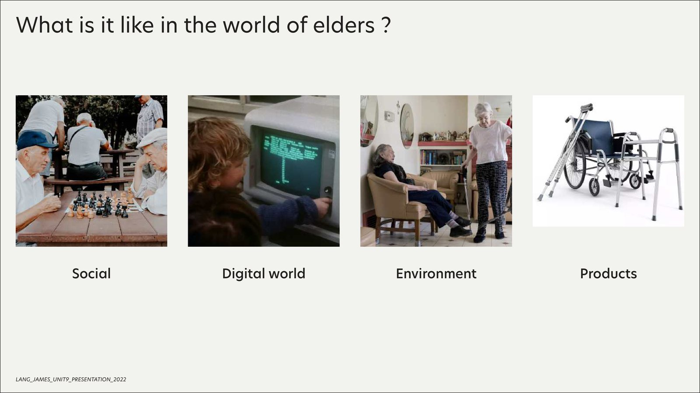
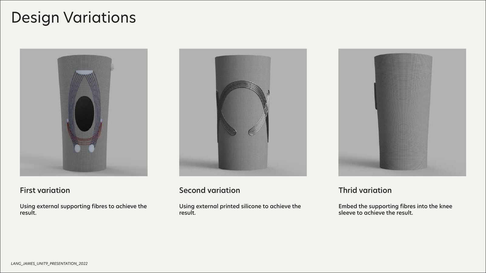
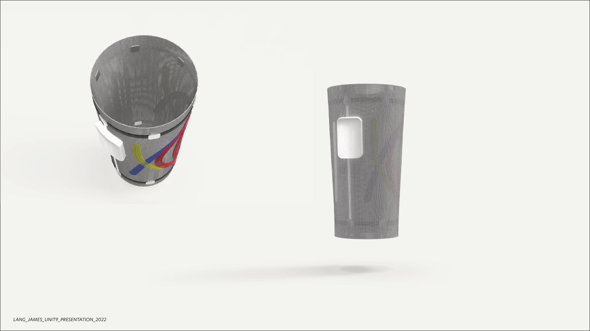
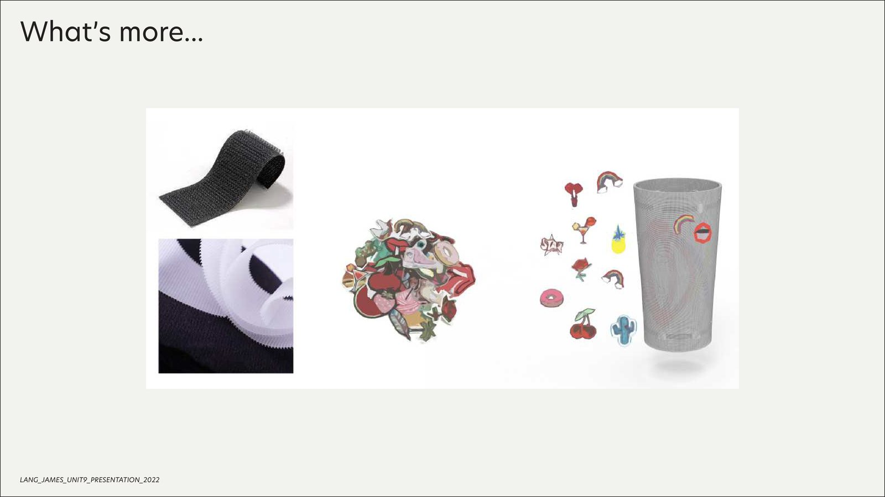
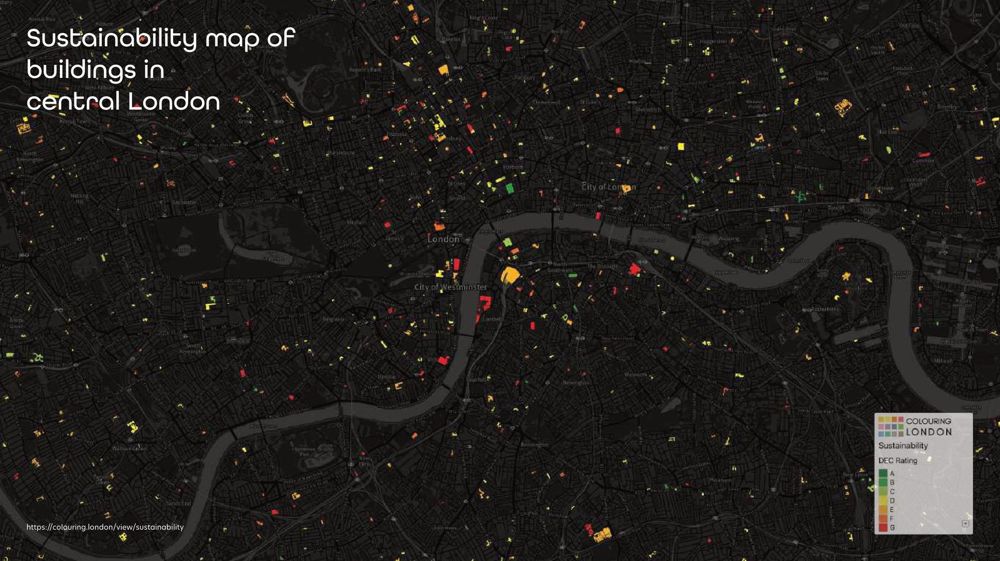
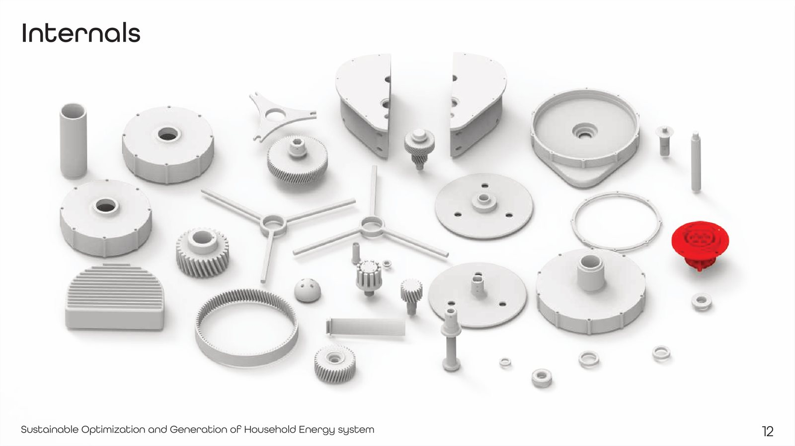
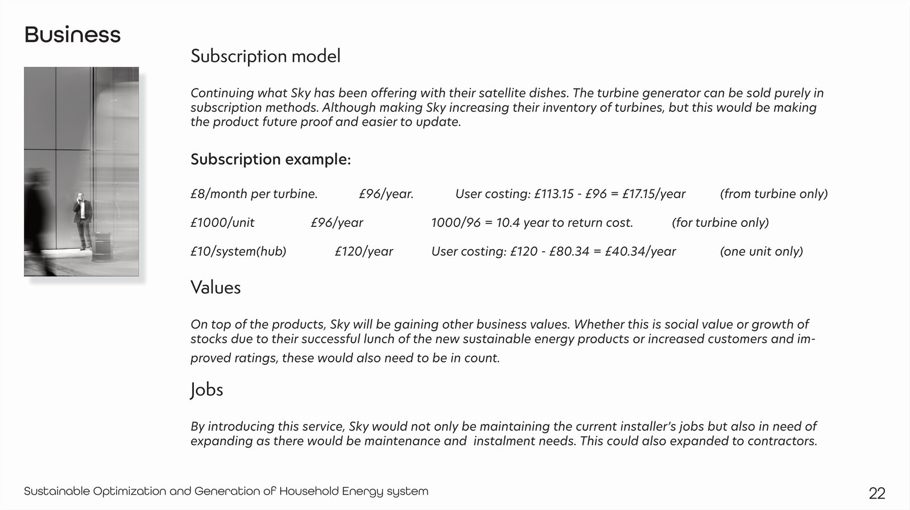
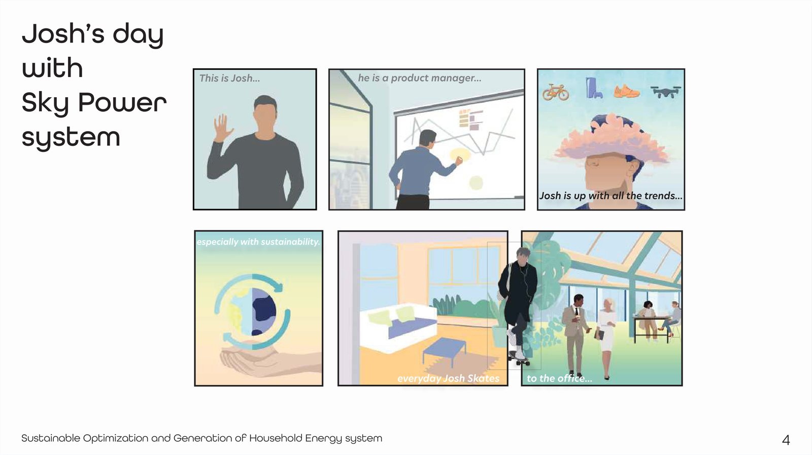

Two yearlong design projects run in parallel during the final year of the BA Product & Industrial Design programme at Central Saint Martins (UAL). One explored fall prevention for older adults through user-centred product and environmental design; the other investigated circular reuse pathways for decommissioned satellite dishes as urban wind-energy prototypes.
Both projects received distinction grades. WAM was shortlisted for university design awards and informed subsequent interest in bio-integrated and systems-level design approaches at UCL Bartlett.
WAM — wearable artificial muscle.
A / PROBLEMFalls are the leading cause of injury-related death among older adults, with the UK's social cost projected to reach £20 billion by 2050 and £30 billion by 2100. Yet most existing interventions are reactive — zimmer frames, hip protectors, personal alarms — and carry significant social stigma that discourages adoption.
WAM took a preventative approach: a knee sleeve that uses electromyography (EMG) sensors to monitor muscle activity and provide targeted support before weakness leads to a fall. The design philosophy was prevention, not protection — optimising for the individual user rather than offering generic support.


Technical approach.
A / METHODThe knee sleeve uses a three-layer textile structure: a compression base layer, a support layer with integrated artificial-muscle elements (strings and inflatable tubes acting as secondary muscles), and an outer knit layer inspired by Nike Flyknit — fitting like a sock while providing structural support. EMG sensors embedded in the fabric monitor the quadriceps and semitendinosus muscles, detecting weakness before it causes instability.
The physical prototype was built with a custom tailor who stitched two bespoke knee sleeves together to demonstrate the 3-layer structure. EMG sensors and electronics were assembled onto the outer side, with KT (kinesiology) tapes providing the muscle-support pathways. The system feeds data to a companion app, allowing both the user and their physiotherapist to monitor progress and adjust support levels.
All fabrics were designed to be fully recyclable, closing the material lifecycle. Inspiration drew from Hövding (the airbag cycling helmet), hip-protection airbags, and 3D-knit construction techniques to create a support system that feels like clothing rather than medical equipment.



SOGES — circular wind-energy system.
B / PROBLEMThe Ukraine–Russia conflict triggered an energy crisis across the UK, with price caps rising sharply and renewable sources accounting for only 14.5% of electricity generation. Within that slice, wind is the dominant source — and approximately 40% of all wind energy in Europe blows over the UK. Meanwhile, Sky Group holds over 800 tons of mild-steel satellite dishes waiting to be recycled as streaming replaces broadcast television.
SOGES proposed a circular system: partnering Sky Group with an energy provider to convert decommissioned satellite dishes into small-scale urban wind turbines. The dishes provide the raw material (mild steel); the energy company contributes engineering expertise and distribution infrastructure — a win-win that addresses both electronic waste and residential energy efficiency.


Engineering & systems design.
B / METHODDesign development was supported by Dr. Jun Ma (Doctor of Aerodynamics, University of Cambridge) and Professor Ning Qin (Professor of Aerodynamics, University of Sheffield), who advised on blade geometry, airflow optimisation, and structural decisions.
The turbine design evolved through four iterations: reducing blade count, transitioning from small input holes to HAWT-style blades, optimising the top edge geometry, and refining the upper and lower housing. The final design featured injection-mould-ready upper and lower covers, HAWT-style blades on a rotary shaft, a 1:120 gearbox, an electricity generator, PCB electronics, and a connection port — all designed for manufacture from melted satellite-dish steel.
The business model mapped a circular value chain: Sky provides raw material and data, the energy company provides components and expertise, and the product serves residential, commercial, and council customers. The system includes a battery box, grid connection, and smart saving mode that optimises energy storage and consumption based on occupancy patterns.


Outcomes.
07 / RESULTRunning two yearlong projects simultaneously taught me to manage scope ruthlessly — each could have expanded indefinitely, and the discipline of deciding what to test next (versus what to defer) was more valuable than any individual design decision. WAM showed how user research can fundamentally redirect a brief — starting from "design a walking aid" and arriving at something completely different through genuine engagement with the people involved.
SOGES planted the seed for systems-level thinking that carried forward into the bio-integrated design work at UCL. Designing across a full lifecycle — material, energy, behaviour, aesthetics — requires holding multiple timescales and stakeholder perspectives simultaneously, which is uncomfortable but ultimately produces more honest design outcomes.